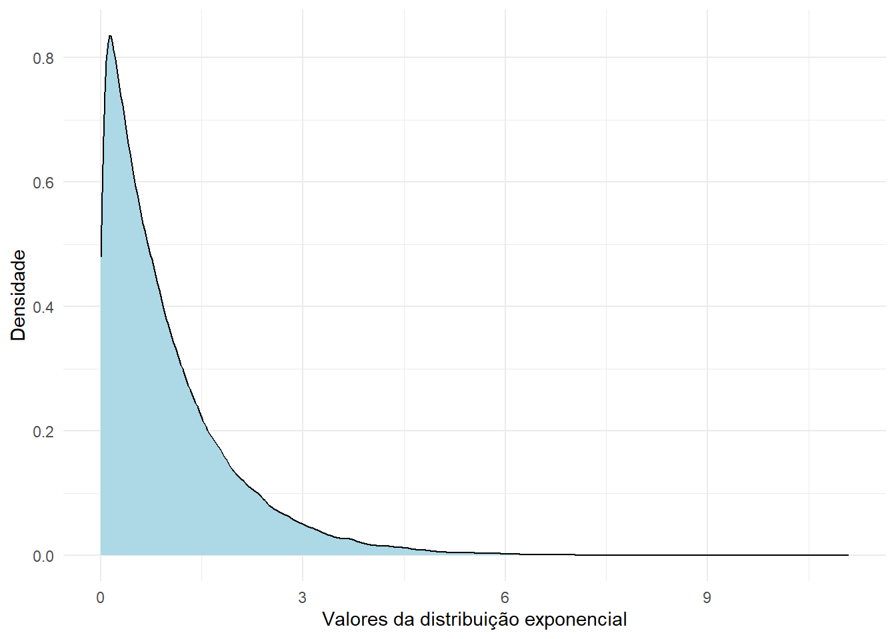
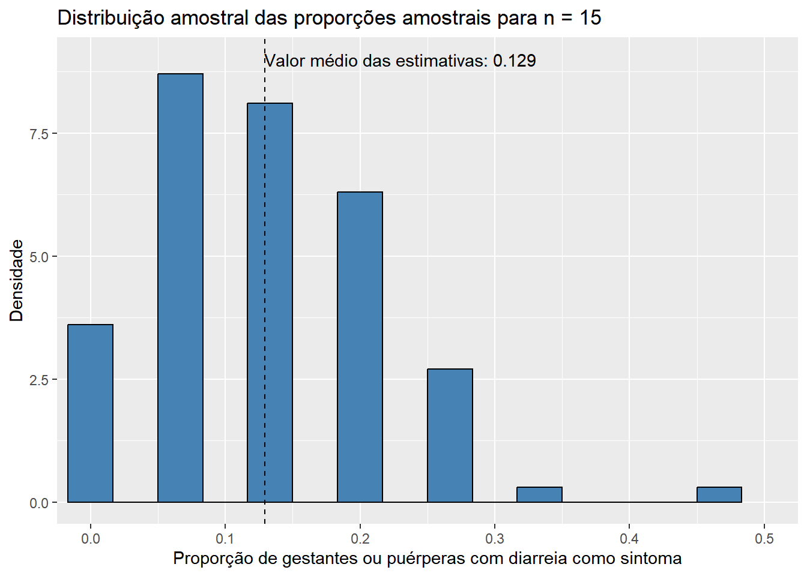
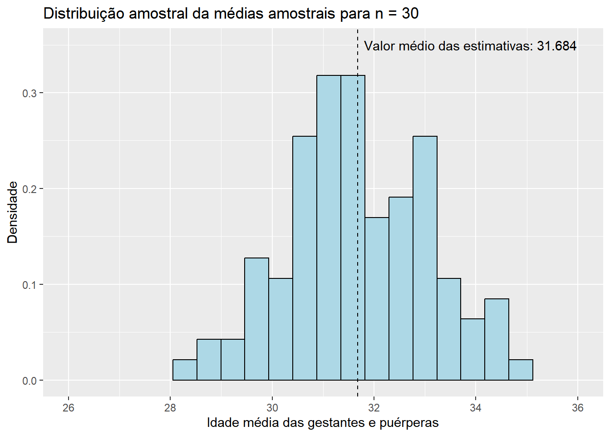
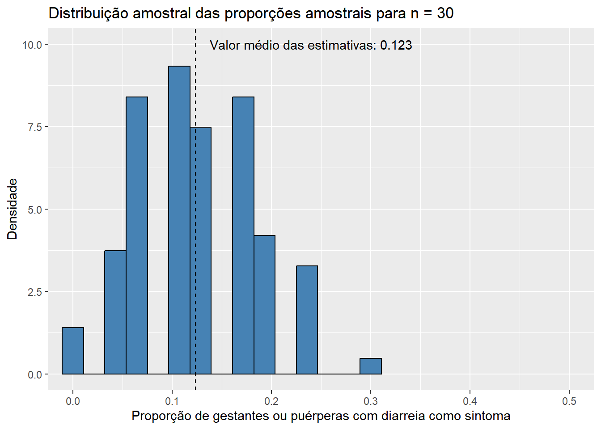
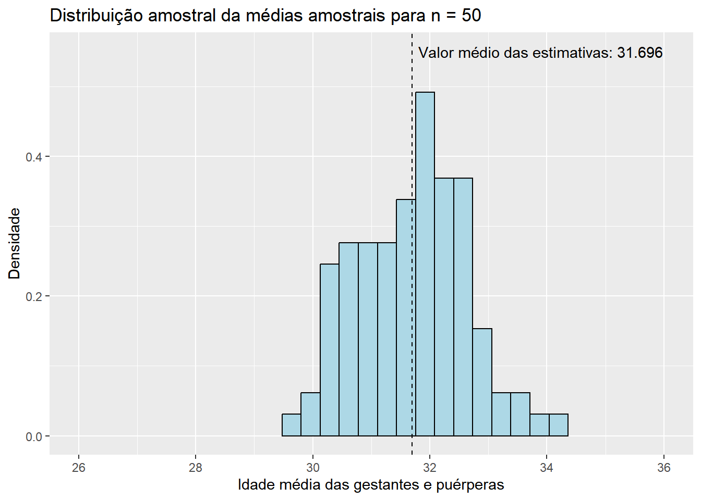
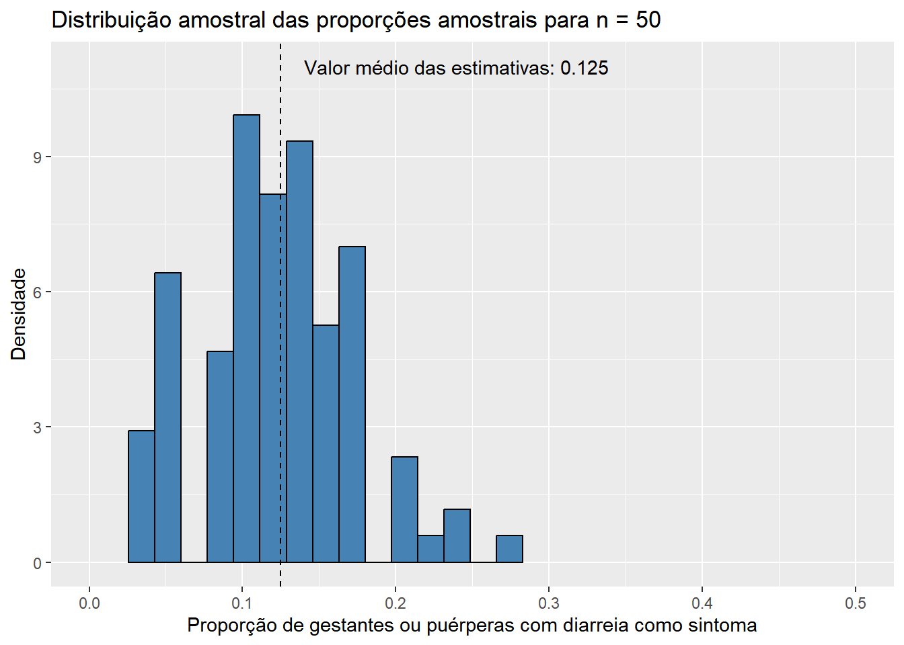
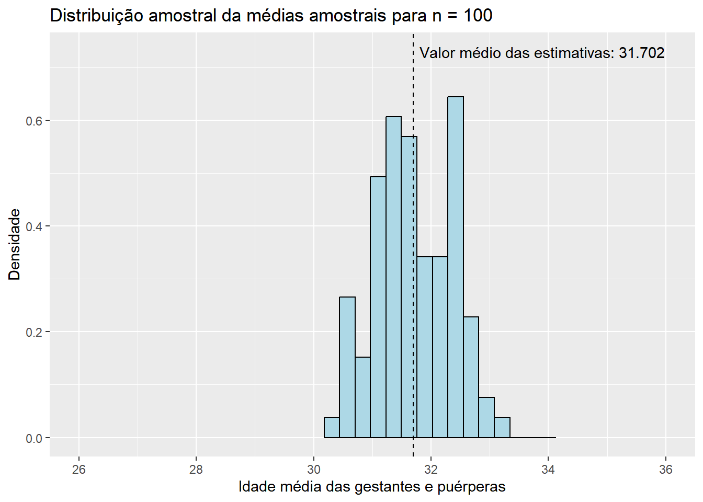
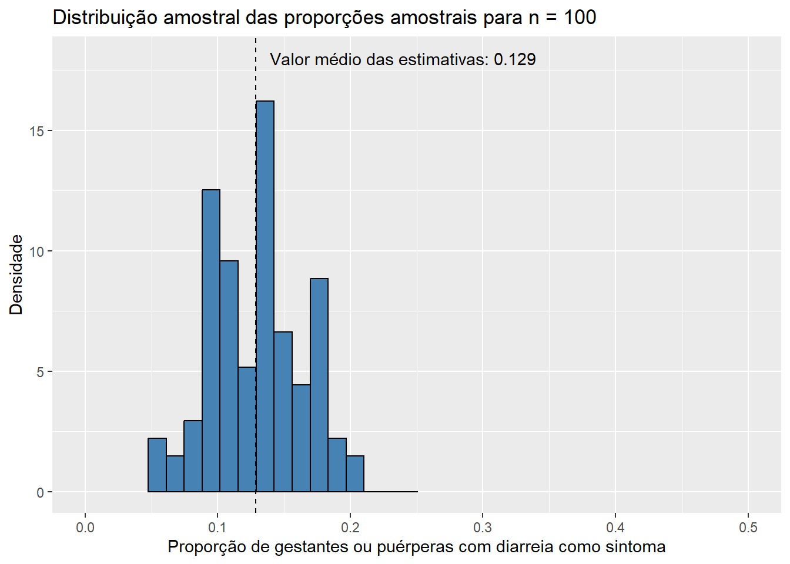
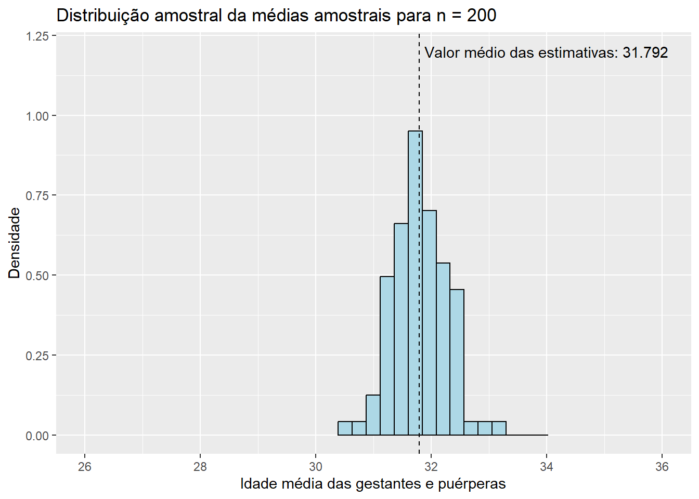
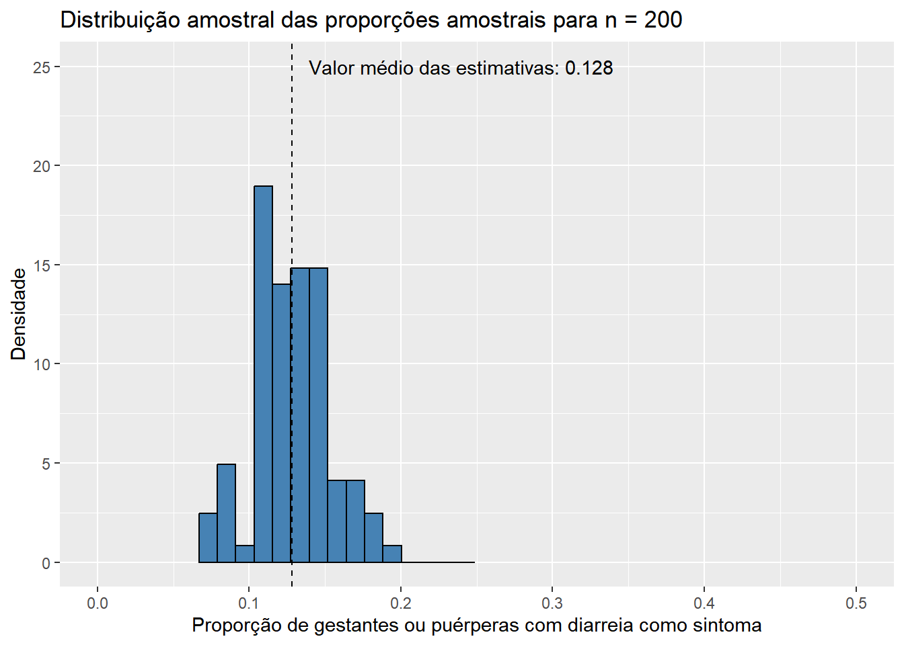

dados <- readr::read_rds("dados/dados_covid[LIMPO].rds")
populacao1 <- dados$idade_anos[which(dados$evolucao == "óbito")]
length(populacao1)[1] 1266#Estimação
Neste capítulo, iniciando no mundo da Inferência Estatística, trataremos sobre o problema da estimação. É muito comum, no dia a dia, nos depararmos com situações em que temos interesse no valor de uma quantidade desconhecida a respeito de alguma população que estamos estudando. Utilizando os dados sobre a COVID-19 apresentados anteriormente, suponha, por exemplo, que tivéssemos interesse na idade média das gestantes e puérperas hospitalizadas por COVID-19 e que vieram a óbito por conta dessa doença no período de março de 2020 a dezembro de 2021, ou que nossa intenção fosse investigar a proporção de doentes que apresentaram diarreia como um de seus sintomas nesse mesmo período. A essas quantidades da população, que em geral são desconhecidas, damos, na Estatística, o nome de parâmetro.
Apesar de, no presente caso, termos acesso aos dados de toda a população de gestantes e puérperas hospitalizadas pela COVID-19 no período especificado, conhecer o verdadeiro valor de um parâmetro é, na maior parte das vezes, uma tarefa impraticável, seja pela extensão da população, pelo tempo que seria gasto para se realizar tal estudo ou mesmo pela falta de recursos disponíveis. Com isso, acabamos tendo de recorrer à coleta de uma amostra, uma pequena porção do todo que nos permita estudar as quantidades que temos interesse. Uma amostra representativa da população nos permite obter boas estimativas para os valores dos parâmetros que estamos investigando, e a aplicação de métodos inferenciais nos possibilita estender, à população, as conclusões que fizemos para a amostra obtida. Quando as estimativas se dão apenas por um único valor, as chamamos de estimativas pontuais. Por outro lado, quando as estimativas são formadas por um intervalo de valores plausíveis para o parâmetro, as chamamos de estimativas intervalares. Discutiremos sobre ambos os tipos de estimativas ao longo deste capítulo. Antes, entretanto, precisamos entender alguns conceitos básicos de probabilidade e inferência para que a viagem ao longo desse novo universo não seja tão turbulenta.
A fazer
Agora que estamos a parte de algumas definições que serão importantes para o entendimento do capítulo, podemos iniciar com o seu conteúdo propriamente dito. Em primeiro lugar, chamamos de estimador qualquer estatística cujos valores são utilizados para se estimar um parâmetro ou uma função de um parâmetro. Dessa forma, temos, portanto, que todo estimador será, também, uma variável aleatória, uma vez que eles são funções das variáveis aleatórias que compõem nossa amostra. Quando coletamos a amostra, observamos os valores das variáveis aleatórias que a compõem e os substituímos na expressão do estimador, obtemos o que chamamos de estimativa. Estimativas não são valores aleatórios, mas sim realizações de variáveis aleatórias (dos estimadores).
Diversos métodos foram desenvolvidos ao longo dos anos para se encontrar estatísticas que possam ser utilizadas como estimadores. Entre os mais conhecidos, podemos citar: o método dos momentos, que encontra estimadores relacionando os momentos amostrais e populacionais; o método dos mínimos quadrados, a partir do qual encontramos o estimador que minimiza a chamada soma de quadrado dos erros; e o método da máxima verossimilhança, provavelmente o mais conhecido e utilizado, por meio do qual encontramos o estimador que maximiza a probabilidade de a amostra coletada ter sido observada, através da maximização da função de verossimilhança. Não entraremos em maiores detalhes sobre nenhum desses métodos, uma vez que nosso objetivo aqui é introduzir o conceito de estimação de forma mais intuitiva. Entretanto, caso seja de seu interesse, já publicamos, no site do Observatório, um texto que pode te ajudar a entender o método da máxima verossimilhança e tudo aquilo que está por trás dele. O post está disponível neste link .
O problema da estimação não se resume somente a encontrar estimadores. De fato, existem infinitos estimadores para qualquer que seja o parâmetro que tenhamos interesse. A questão agora é, então, estabelecer critérios que nos permitam determinar o melhor estimador em um certo conjunto. Nesse contexto, podemos definir uma série de propriedades que os estimadores possuem ou podem possuir. São elas:
Vício: dizemos que um estimador é não viciado (ou não viesado) se o seu valor esperado coincide com o verdadeiro valor do parâmetro em questão. Em outras palavras, estimadores não viciados acertam, em média, o valor do parâmetro que estão estimando. Caso essa afirmação não seja verdadeira, dizemos que o estimador apresenta vício. O vício é a diferença entre o verdadeiro valor do parâmetro e o valor esperado de seu estimador.
Consistência: dizemos que um estimador é consistente se, à medida que o tamanho da amostra aumenta, o seu valor esperado converge para o verdadeiro valor do parâmetro em questão e sua variância converge para zero. Dessa forma, estimadores consistentes não necessariamente são não viciados para tamanhos pequenos de amostra: eles só precisam ser não viciados quando esse tamanho é muito grande.
Erro quadrático médio: definimos o erro quadrático médio como sendo o valor esperado da diferença quadrática entre o estimador e o verdadeiro valor do parâmetro estimado. Tal como a variância de uma variável aleatória é uma medida da dispersão de seus valores em torno de sua média, o erro quadrático médio é uma medida da dispersão dos valores do estimador em torno do verdadeiro valor do parâmetro. Dessa forma, estimadores com erros quadráticos médios pequenos são preferíveis. Algo a se notar é que o erro quadrático médio pode ser reescrito como sendo a soma entre o quadrado do vício do estimador e sua variância. Com isso, para estimadores não viciados, o erro quadrático médio se reduz à variância do estimador.
Em um mundo ideal, parece ser intuitivo que nossa busca pelo melhor estimador se dê através do erro quadrático médio, tentando encontrar aquele para o qual essa medida seja a menor possível. Essa tarefa é, entretanto, raramente possível. Em geral, o erro quadrático médio de um estimador é uma função do valor desconhecido do parâmetro a ser estimado, e é muito comum que, para dois estimadores de um parâmetro, seus erros quadráticos médios se entrelassem: para certos valores do parâmetro, o primeiro estimador pode ter o menor erro quadrático médio, enquanto para outros valores o segundo estimador é o que o tem. Com isso, em nossa busca pelo melhor estimador, é comum restringirmos o conjunto de todos os estimadores possíveis à classe dos estimadores não viciados, fazendo com que o erro quadrático médio seja apenas uma função da variância do estimador. Essa restrição é feita porque existem técnicas que nos permitem encontrar, entre os estimadores não viciados, aqueles que possuem a menor variância possível. Não trataremos dessas técnicas ao longo deste livro, mas essa é uma importante consideração para se entender o motivo de, em geral, trabalharmos com estimadores não viciados. De toda forma, passemos, então, para a próxima seção, na qual veremos alguns exemplos de estimadores pontuais utilizando os dados apresentados e tratados em capítulos anteriores.
Para iniciar esta seção, comecemos com uma definição. Chamamos de estimação pontual a técnica de estimação na qual utilizamos um único valor de uma estatística para representarmos, ou estimarmos, o valor desconhecido de um parâmetro de interesse. Chamamos essa estatística de estimador pontual, enquanto ao seu valor observado damos o nome de estimativa pontual. [completar]
Voltando aos exemplos apresentados na introdução do capítulo, suponha, primeiramente, que nosso parâmetro de interesse seja a idade média das gestantes e puérperas hospitalizadas por COVID-19 que vieram a óbito por conta dessa doença no período de março de 2020 a dezembro de 2021, a qual denotaremos por \(\mu\). Como temos acesso a todos os registros dessa população, o valor desse parâmetro não é desconhecido, mas isso servirá de auxílio para exemplificar os métodos que aqui serão empregados. Criando um vetor contendo todos os elementos da população, temos:
dados <- readr::read_rds("dados/dados_covid[LIMPO].rds")
populacao1 <- dados$idade_anos[which(dados$evolucao == "óbito")]
length(populacao1)[1] 1266O processo envolvido na criação do vetor populacao1 é o seguinte: dentro do data frame dados, que contém todos os registros de nossa população, estamos selecionando o valor da variável idade_anos de todas as pacientes para as quais o valor da variável evolucao é “óbito”. O tamanho desse vetor, obtido por meio da função length(), do pacote básico {base}, é de 1266. Ou seja, a população de gestantes e puérperas hospitalizadas por COVID-19 que vieram a óbito por conta dessa doença no período considerado é composta por 1266 elementos. Para calcular o valor da idade média dessas mulheres, podemos utilizar a função mean(), também do pacote básico {base}, que calcula a média aritmética de um dado vetor.
mean(populacao1)[1] 31.80806A saída do código nos revela o valor de \(31.81\) anos. Note que esse valor não representa uma estimativa; ele é, de fato, o verdadeiro valor do parâmetro \(\mu\). O que aconteceria, entretanto, se tivéssemos acesso apenas a uma amostra da população em questão? Poderíamos garantir que os resultados obtidos seriam válidos para todas as gestantes e puérperas desse grupo? É o que começaremos a ver na subseção seguinte.
Para exemplificar os conceitos de estimação definidos anteriormente, simularemos a retirada de amostras da população de gestantes e puérperas com a qual estamos trabalhando. Dentre as várias maneiras de se obter amostras de uma população, utilizaremos, aqui, a amostragem aleatória simples (AAS) com reposição, uma técnica de amostragem probabilística (ou seja, que atribui a cada elemento da população uma probabilidade, conhecida a priori, de pertencer à amostra), na qual todos os elementos da população possuem a mesma probabilidade de serem sorteados. Utilizaremos a AAS com reposição, que admite a possibilidade de um elemento ser selecionado mais de uma vez, por sua maior simplicidade teórica e por algumas implicações matemáticas e estatísticas que ela carrega, como a independência entre as unidades sorteadas.
Antes da realização da amostragem, denotamos as variáveis a serem selecionadas por \(X_1, X_2, ..., X_{n}\), sendo \(X_i\) a variável aleatória que representa a idade da \(i\)-ésima gestante ou puérpera hospitalizada pela COVID-19 e que faleceu em decorrência dessa doença, com \(i = 1, 2, ..., n\). Dizemos que essa sequência de variáveis aleatórias forma uma amostra aleatória de tamanho \(n\). Sendo, novamente, \(\mu\) o parâmetro que representa a idade média da população em questão, e denotando por \(\sigma^2\) o parâmetro que representa a variância populacional das idades dessas gestantes e puérperas, temos, ainda, que \(E(X_i) = \mu\) e que \(Var(X_i) = \sigma^2\).
Dentro do R, podemos obter uma amostra aleatória de tamanho, digamos, \(n = 30\), a partir da função sample(), do pacote básico {base}. Utilizaremos três argumentos dessa função: o primeiro, x, recebe o vetor de elementos do qual a amostra será retirada; o segundo, size, recebe o número de itens a serem sorteados; por fim, o terceiro argumento, replace, receberá o valor TRUE, indicando que a amostragem deve ser realizada com reposição. O código utilizado para a realização desse processo, bem como a amostra obtida, podem ser vistos abaixo.
set.seed(43)
amostra1 <- sample(x = populacao1, size = 30, replace = TRUE)
amostra1 [1] 32 27 37 38 39 32 30 24 29 30 34 40 33 17 34 35 32 38 23 24 33 38 18 25 26
[26] 32 25 36 29 32É importante ressaltar que, enquanto \(X_1, X_2, ..., X_{30}\) são variáveis aleatórias, os valores guardados no vetor amostra1 representam realizações das mesmas. Dessa forma, temos, para a amostra sorteada, que \(x_1 = 32\), \(x_2 = 27\), \(x_3 = 37\) e assim por diante. Essas realizações seriam, muito provavalmente, diferentes caso desempenhássemos o procedimento de retirada da amostra novamente. No presente caso, o código acima sempre resultará nos mesmos elementos, uma vez que estamos fixando a semente inicial do gerador de números pseudo-aleatórios do R por meio da função set.seed(), do pacote básico {base}. Desfixando a semente inicial do sorteio, entretanto, o resultado obtido através da função sample() seria diferente a cada vez que rodássemos o bloco de código. Observe.
sample(x = populacao1, size = 30, replace = TRUE) [1] 33 33 27 17 27 24 28 29 30 32 32 31 41 25 30 26 41 26 27 33 27 33 24 39 36
[26] 30 40 32 28 23sample(x = populacao1, size = 30, replace = TRUE) [1] 33 42 32 29 32 30 30 39 35 48 32 26 27 42 23 29 31 37 27 32 25 41 43 22 21
[26] 30 34 22 30 37sample(x = populacao1, size = 30, replace = TRUE) [1] 22 33 32 30 30 31 36 37 37 23 28 33 38 40 21 23 38 33 23 37 27 31 43 39 41
[26] 36 35 39 39 45Com a distinção entre variáveis aleatórias e suas realizações em mente, precisamos, nesse próximo caso, definir qual estimador utilizaremos para estimarmos o parâmetro em questão. Como temos interesse na idade média da população, uma escolha muito intuitiva seria utilizar a média aritmética dos valores amostrados como uma estimativa do valor desse parâmetro. Assim, considerando que \(X_1, X_2, ..., X_n\) formam uma amostra aleatória de tamanho \(n\) dessa população, definimos o estimador da média amostral como sendo a estatística dada por
\[ \bar{X} = \frac{X_1 + X_2 + ... + X_{n}}{n} = \frac{\sum_{i = 1}^{n} X_i}{n}. \]
Além de muito intuitivo, esse estimador é, também, não viciado e consistente. Podemos facilmente demonstrar essas propriedades de forma matemática, utilizando para isso propriedades de valores esperados. Quanto a ser não viciado, temos:
\[ E(\bar{X}) = E\left(\frac{\sum_{i = 1}^{n} X_i}{n}\right). \]
Como \(\frac{1}{n}\) é um valor constante que está multiplicando a variável aleatória \(\sum_{i = 1}^{n} X_i\), podemos retirá-lo da esperança o multiplicando:
\[ E(\bar{X}) = E\left(\frac{\sum_{i = 1}^{n} X_i}{n}\right) = \frac{1}{n}E\left(\sum_{i = 1}^{n} X_i\right). \]
Sendo a esperança da soma de variáveis aleatórias equivalente à soma das esperanças marginais de cada variável, temos:
\[ E(\bar{X}) = E\left(\frac{\sum_{i = 1}^{n} X_i}{n}\right) = \frac{1}{n}E\left(\sum_{i = 1}^{n} X_i\right) = \frac{1}{n} \sum_{i = 1}^{n} E\left(X_i\right) \]
Por fim, como \(E(X_i) = \mu\),
\[ E(\bar{X}) = E\left(\frac{\sum_{i = 1}^{n} X_i}{n}\right) = \frac{1}{n}E\left(\sum_{i = 1}^{n} X_i\right) = \frac{1}{n} \sum_{i = 1}^{n} E\left(X_i\right) = \frac{1}{n} \sum_{i = 1}^{n} \mu = \frac{1}{n} (n\mu) = \mu. \]
Logo, como o valor esperado do estimador é igual ao parâmetro que ele estima, concluímos que \(\bar{X}\) é um estimador não viciado. Para demonstrarmos que ele é, também, consistente, precisamos calcular sua variância. Assim,
\[ Var(\bar{X}) = Var\left(\frac{\sum_{i = 1}^{n} X_i}{n}\right). \]
Como \(\frac{1}{n}\) é um valor constante que está multiplicando a variável aleatória \(\sum_{i = 1}^{n} X_i\), podemos retirá-lo da variância elevando-o ao quadrado:
\[ Var(\bar{X}) = Var\left(\frac{\sum_{i = 1}^{n} X_i}{n}\right) = \frac{1}{n^2} Var\left(\sum_{i = 1}^{n} X_i\right). \]
Como utilizamos a AAS com reposição para a retirada da amostra, garantimos que as variáveis aleatórias que a compõem são independentes. Assim, sendo a variância da soma de variáveis aleatórias independentes dada pela soma das variâncias marginais de cada variável, e como \(Var(X_i) = \sigma^2\), temos:
\[ \begin{align} Var(\bar{X}) = Var\left(\frac{\sum_{i = 1}^{n} X_i}{n}\right) = \frac{1}{n^2} Var\left(\sum_{i = 1}^{n} X_i\right) & = \frac{1}{n^2} \sum_{i = 1}^{n} Var(X_i) \\ & = \frac{1}{n^2} \sum_{i = 1}^{n} \sigma^2 \\ & = \frac{1}{n^2} (n \sigma^2) \\ & = \frac{\sigma^2}{n}. \end{align} \]
Observe que, quanto maior o valor do tamanho de amostra \(n\), menor é o valor da variânica de \(\bar{X}\). Essa informação, aliada ao fato de \(\bar{X}\) ser não viciado, nos permite concluir que o estimador em questão é consistente. Voltando ao exemplo em que estávamos, como definimos que \(n = 30\), a expressão do estimador da média amostral se torna
\[ \bar{X} = \frac{X_1 + X_2 + ... + X_{30}}{30} = \frac{\sum_{i = 1}^{30} X_i}{30}. \]
Substituindo os valores da amostra coletada e calculando sua média aritmética, obtemos:
mean(amostra1)[1] 30.73333Com isso, concluímos que uma estimativa pontual para a idade média das gestantes e puérperas que faleceram em decorrência da COVID-19 é de \(30.73\). Esse valor é relativamente próximo do verdadeiro valor do parâmetro, o qual sabemos ser 31.81. Lembre-se, entretanto, que a estimativa obtida depende diretamente da amostra que foi coletada, uma vez que nosso estimador é uma função da amostra e, portanto, é uma variável aleatória. A cada vez que realizássemos um novo sorteio, o valor de nossa estimativa seria, muito provavelmente, diferente do anterior. Como nosso objetivo é fazer uma afirmação sobre o parâmetro \(\mu\) a partir da amostra coletada, é interessante considerar que a validade dessa afirmação seria melhor compreendida se soubéssemos o que acontece com nosso estimador quando retiramos todas as amostras de mesmo tamanho possíveis de nossa população. Retomaremos essa discussão posteriormente. Buscaremos, agora, estimar um outro tipo de parâmetro: a proporção populacional.
Para o segundo exemplo, suponha que o parâmetro no qual temos interesse seja a proporção válida de gestantes e puérperas hospitalizadas por COVID-19 no período de março de 2020 a dezembro de 2021 que apresentaram diarreia como um de seus sintomas. Representaremos esse parâmetro por \(p\). Assim como no exemplo anterior, podemos calcular seu valor, uma vez que temos acesso a todos os registros dessa população. Note que, como estamos tratando da proporção válida, precisamos que nossa população seja composta apenas pelas mulheres para as quais o valor da variável diarreia foi preenchido de forma válida (ou seja, com sim ou não). Assim, temos:
populacao2 <- dados$diarreia[which(!is.na(dados$diarreia) & dados$diarreia != "ignorado")]
length(populacao2)[1] 8472head(populacao2, 20) [1] "não" "não" "não" "não" "não" "não" "não" "não" "não" "não" "não" "não"
[13] "não" "sim" "não" "não" "não" "não" "não" "não"Observando as saídas acima, podemos notar que nossa população é formada por 8.472 elementos, que assumem valor sim, quando a gestante ou puérpera apresentou diarreia como um dos sintomas da COVID-19, e não, quando esse sintoma não foi apresentado. Para facilitar nosso trabalho a partir daqui, transformaremos os valores sim em 1 e os valores não em 0, utilizando para isso a função ifelse(), do pacote básico {base}. Essa função recebe três argumentos: o primeiro, test, recebe um vetor lógico; o segundo, yes, recebe o valor que a função deve retornar quando o dado elemento desse vetor lógico for verdadeiro; por fim, o terceiro argumento, no, recebe o valor que a função deve retornar quando o dado elemento do vetor lógico for falso. Observe o código e a saída abaixo.
populacao2_transformada <- ifelse(populacao2 == "sim", yes = 1, no = 0)
head(populacao2_transformada, 20) [1] 0 0 0 0 0 0 0 0 0 0 0 0 0 1 0 0 0 0 0 0Calculando, por fim, a proporção desejada, que nada mais será do que a média aritmética do vetor populacao2_transformada, uma vez que ele é formado por zeros e uns, temos:
mean(populacao2_transformada)[1] 0.128305Logo, o valor do parâmetro \(p\) - a proporção válida de gestantes e puérperas hospitalizadas por COVID-19 no período de março de 2020 a dezembro de 2021 que apresentaram diarreia como um de seus sintomas - é de 0,128, ou 12,8%. Vamos, agora, fingir que não tínhamos acesso a métodos de se calcular o valor desse parâmetro, tentando novamente estimá-lo por meio da coleta de amostras da população.
Diferentemente do que ocorria com o exemplo anterior, a amostra aleatória que agora coletaremos será composta por variáveis aleatórias para as quais sabemos a “forma” de sua distribuição de probabilidade. Podemos definir \(Y_1, Y_2, ..., Y_{n}\) como sendo uma amostra aleatória da distribuição Bernoulli com parâmetro \(p\), na qual \(Y_i\) recebe o valor 1, caso a \(i\)-ésima gestante ou puérpera sorteada tenha apresentado diarreia como um dos sintomas da COVID-19 (sucesso), e 0, caso contrário (fracasso), com \(i = 1, 2, ..., n\). O parâmetro \(p\) representa a probabilidade de sucesso (que sabemos ser de 0,128, apesar de estarmos fingindo que não temos essa informação). Como queremos estimar uma proporção, é intuitivo considerarmos como estimador a proporção das gestantes ou puérperas da amostra que apresentaram diarreia como sintoma. Assim, definimos o estimador da proporção amostral, denotado por \(\hat{p}\), como sendo
\[ \hat{p} = \frac{Y_1 + Y_2 + ... + Y_n}{n} = \frac{\sum_{i = 1}^{n} Y_i}{n}. \]
De maneira similar ao que fizemos com o estimador da média amostral, \(\bar{X}\), podemos demonstrar que o estimador da proporção amostral é, também, não viciado e consistente. Quanto à primeira propriedade, sabendo que \(E(Y_i) = p\), para \(i = 1, 2, ..., n\), temos:
\[ E\left(\hat{p}\right) = E \left( \frac{\sum_{i = 1}^{n} Y_i}{n} \right) = \frac{1}{n} \sum_{i = 1}^{n} E\left(Y_i \right) = \frac{1}{n} \sum_{i = 1}^{n} p = \frac{1}{n} (np) = p. \]
Assim, como \(E(\hat{p}) = p\), podemos concluir que o estimador da proporção amostral é não viesado. Em outras palavras, esse estimador “acerta”, em média, o verdadeiro valor do parâmetro \(p\). Para a segunda propriedade, precisamos, primeiramente, calcular a variância de \(\hat{p}\). Como \(Y_i\) segue distribuição \(Bernoulli(p)\), sabemos que \(Var(Y_i) = p(1 - p)\). Dessa forma, temos que
\[ \begin{align} Var(\hat{p}) = Var \left( \frac{\sum_{i = 1}^{n} Y_i}{n} \right) = \frac{1}{n^2} \sum_{i = 1}^{n} Var(Y_i) & = \frac{1}{n^2} \sum_{i = 1}^{n} p(1 - p) \\ & = \frac{1}{n^2} \left[np(1 - p)\right] \\ & = \frac{p(1 - p)}{n}. \end{align} \]
Observe que, quanto maior o valor do tamanho de amostra \(n\), menor é o valor da variânica de \(\hat{p}\). Essa informação, aliada ao fato de \(\hat{p}\) ser não viciado, nos permite concluir que o estimador em questão é consistente. Investigadas as propriedades do estimador, podemos partir para a retirada da amostra, utilizando novamente a função sample() para simular uma amostra de tamanho \(n = 30\) obtida por meio da AAS com reposição. A amostra coletada pode ser vista abaixo.
set.seed(43)
amostra2 <- sample(x = populacao2_transformada, size = 30, replace = TRUE)
amostra2 [1] 0 0 0 0 0 0 0 1 1 0 0 0 0 0 0 0 0 1 0 0 0 0 0 0 0 0 0 0 1 0Aplicando os valores obtidos no estimador da proporção amostral, que nada mais é do que a média aritmética da amostra, temos:
mean(amostra2)[1] 0.1333333Com isso, concluímos que uma estimativa pontual para a proporção válida de gestantes e puérperas hospitalizadas pela COVID-19 no período em estudo e que apresentaram diarreia como um dos sintomas da doença é de 0,133, ou de 13,3%. Novamente, essa estimativa depende diretamente da amostra obtida; novas amostragens quase certamente resultariam em estimativas diferentes para o parâmetro. Com isso, volta à tona a reflexão levantada no final do exemplo anterior, de que a validade de nossa afirmação sobre o verdadeiro valor de \(p\) seria melhor compreendida caso levássemos em consideração a distribuição de nosso estimador, \(\hat{p}\). Conseguiríamos estudar o comportamento probabilístico de \(\hat{p}\) caso aumentássemos o tamanho da amostra? A resposta, já adiantando, é sim. O que utilizamos para realizar esse estudo, entretanto, será visto na próxima seção.
Como vimos ao longo das seções anteriores, o problema da Inferência Estatística que queremos resolver consiste em fazer uma afirmação sobre um certo parâmetro de uma determinada população por meio de uma amostra. Para encará-lo, decidimos que nossa afirmação será baseada em uma certa estatística \(T\), para a qual demos o nome de estimador, que será uma função da amostra (\(X_1, X_2, ..., X_n\)). Quando coletamos a amostra, podemos obter um valor particular de \(T\), digamos \(t_0\), para o qual demos o nome de estimativa. E é com base nesse valor \(t_0\) que faremos a afirmação sobre o parâmetro de interesse. Para entendermos melhor a incerteza por trás de nossa afirmação, entretanto, seria de nosso interesse determinar qual é a distribuição de \(T\) quando a amostra, \(X_1, X_2, ..., X_n\), assume todos os valores possíveis. Chamamos essa distribuição de distribuição amostral da estatística T. Bussab e Moretin (referência) esquematizam o procedimento para a obtenção da distribuição amostral da seguinte maneira:
A partir de uma determinada população \(X\), com certo parâmetro de interesse \(\theta\), obtemos todas as amostras possíveis com um mesmo tamanho amostral \(n\), de acordo com uma certa técnica de amostragem;
Para cada amostra obtida, calculamos o valor \(t\) da estatística \(T\);
Os valores \(t\) formam uma nova população, cuja distribuição recebe o nome de distribuição amostral de \(T\).
É muito comum, no entanto, que não sejamos capazes de coletar todas as amostras possíveis de uma população. Com isso, acabamos tendo que nos contentar em simular um número grande de amostras, para assim termos uma ideia do que acontece com a estatística de interesse. Para melhor entendermos as ideias apresentadas, consideremos os estimadores \(\bar{X}\), a média amostral, e \(\hat{p}\), a proporção amostral. Nos exemplos antecedentes, acabamos determinando, talvez sem perceber, a média e a variância das distribuições amostrais de ambos os estimadores quando estávamos demonstrando duas de suas propriedades - a falta de vício e a consistência. Retomando os resultados obtidos, encontramos que
Médias e variâncias não são, todavia, tudo aquilo que precisamos para determinar a distribuição amostral de estimadores. Precisamos, também, determinar sua “forma”. Para isso, coletaremos várias amostras e construiremos histogramas das distribuições de \(\bar{X}\) e \(\hat{p}\) para diferentes tamanhos de amostra. Comecemos simulando \(M\) = 100 amostras, cada uma com tamanho \(n\) = 15, da população de idades de gestantes e puérperas hospitalizadas e falecidas em decorrência da COVID-19 no período em estudo, a qual chamamos de populacao1. Utilizaremos para isso a função replicate(), do pacote básico {base}. Essa função recebe dois argumentos: o primeiro, n, recebe o número de replicações a serem feitas, enquanto o segundo, expr, recebe a expressão que será replicada. O resultado, guardado no objeto amostras_pop1, é uma matriz na qual o elemento \([a_{ij}]\) representa o \(i\)-ésimo elemento da \(j\)-ésima amostra, com \(i = 1, 2, ..., 15\) e \(j = 1, 2, ..., 100\). As cinco primeiras colunas dessa matriz podem ser vistas abaixo.
set.seed(43)
M <- 100
n <- 15
amostras_pop1 <- replicate(M, expr = sample(x = populacao1, size = n, replace = TRUE))
amostras_pop1[, 1:5] [,1] [,2] [,3] [,4] [,5]
[1,] 32 35 33 26 33
[2,] 27 32 33 41 42
[3,] 37 38 27 26 32
[4,] 38 23 17 27 29
[5,] 39 24 27 33 32
[6,] 32 33 24 27 30
[7,] 30 38 28 33 30
[8,] 24 18 29 24 39
[9,] 29 25 30 39 35
[10,] 30 26 32 36 48
[11,] 34 32 32 30 32
[12,] 40 25 31 40 26
[13,] 33 36 41 32 27
[14,] 17 29 25 28 42
[15,] 34 32 30 23 23Repetimos o mesmo processo para a população de gestantes e puérperas com preenchimento válido da variável diarreia, que chamamos de populacao2_transformada. Novamente, as cinco primeiras colunas da matriz de amostras, que agora denominamos amostras_pop2, podem ser vistas abaixo.
set.seed(43)
amostras_pop2 <- replicate(M, expr = sample(x = populacao2_transformada, size = n, replace = TRUE))
amostras_pop2[, 1:5] [,1] [,2] [,3] [,4] [,5]
[1,] 0 0 0 0 0
[2,] 0 0 0 0 0
[3,] 0 1 0 0 0
[4,] 0 0 0 0 0
[5,] 0 0 0 1 1
[6,] 0 0 0 0 0
[7,] 0 0 0 0 0
[8,] 1 0 0 0 0
[9,] 1 0 0 0 0
[10,] 0 0 0 1 0
[11,] 0 0 0 0 0
[12,] 0 0 0 1 1
[13,] 0 0 0 0 0
[14,] 0 1 0 0 0
[15,] 0 0 0 1 0Com as amostras em mãos, o próximo passo é calcular o valor do respectivo estimador em cada uma delas. Realizaremos esse processo com a função apply(), também do pacote básico {base}, a qual permite que apliquemos qualquer função em todas as linhas ou colunas de uma matriz. Utilizaremos três de seus argumentos: o primeiro, X, recebe a matriz na qual queremos aplicar a função; o segundo, MARGIN, recebe a direção em que a função será aplicada (1 caso queiramos que a função seja aplicada nas linhas da matriz, ou 2 caso queiramos a aplicar em suas colunas); por fim, o terceiro, FUN, recebe a função que queremos aplicar. O código utilizado nesse processo, bem como parte dos vetores obtidos, podem ser vistos abaixo.
x_barras <- apply(X = amostras_pop1, MARGIN = 2, FUN = mean)
head(x_barras)[1] 31.73333 29.73333 29.26667 31.00000 33.33333 30.73333p_chapeus <- apply(X = amostras_pop2, MARGIN = 2, FUN = mean)
head(p_chapeus)[1] 0.1333333 0.1333333 0.0000000 0.2666667 0.1333333 0.2000000Por fim, criemos os histogramas da distribuição de cada estimador. Como já discutimos sobre a criação de histogramas no capítulo de Estatística Descritiva, o código abaixo deve ser familiar.
library(ggplot2)
ggplot(data.frame(x_barra = x_barras), aes(x = x_barra)) +
geom_histogram(
aes(y = after_stat(density)),
fill = "lightblue",
bins = 15,
color = "black"
) +
coord_cartesian(xlim = c(26, 36)) +
labs(
x = "Idade média das gestantes e puérperas",
y = "Densidade",
title = "Distribuição amostral da médias amostrais para n = 15"
) +
geom_vline(xintercept = mean(x_barras), linetype = 2) +
annotate(
geom = "text",
x = 34,
y = 0.3,
label = paste("Valor médio das estimativas:", round(mean(x_barras), 3))
)
ggplot(data.frame(p_chapeu = p_chapeus), aes(x = p_chapeu)) +
geom_histogram(
aes(y = after_stat(density)),
fill = "steelblue",
bins = 15,
color = "black"
) +
coord_cartesian(xlim = c(0, 0.5)) +
labs(
x = "Proporção de gestantes ou puérperas com diarreia como sintoma",
y = "Densidade",
title = "Distribuição amostral das proporções amostrais para n = 15"
) +
geom_vline(xintercept = mean(p_chapeus), linetype = 2) +
annotate(
geom = "text",
x = 0.23,
y = 9,
label = paste("Valor médio das estimativas:", round(mean(p_chapeus), 3))
)
Observando os histogramas, podemos notar que, mesmo para um tamanho de amostra pequeno como \(n\) = 15, a distribuição de \(\bar{X}\) se assemelha à distribuição normal, visto que apresenta o característico formato aproximado de sino e uma quase simetria em torno de sua média. Essa combinação de fatores nos sugere que \(X_1, X_2, ..., X_{15}\), as variáveis aleatórias que compõem as amostras da população de idades, seguem, também, uma distribuição simétrica em torno da média. Além disso, o valor médio das estimativas \(\bar{x}\), de 31,843, está muito próximo do verdadeiro valor do parâmetro populacional \(\mu\), que sabemos ser de 31,81 anos. Esse resultado já era esperado, uma vez que a distribuição de \(\bar{X}\) está centrada em \(\mu\). Pouco podemos dizer, entretanto, do histograma da distribuição amostral de \(\hat{p}\) até o momento; apenas que sua média está muito próxima do verdadeiro valor de \(p\), que sabemos ser de 0,128, como já era esperado pelo mesmo motivo. Aumentemos, então, o tamanho das amostras, e observemos os resultados obtidos. Como a única modificação será o valor da variável n, ocultaremos os códigos utilizados para evitar uma maior poluição visual. Dessa forma, para \(n\) = 30, temos:


Para \(n = 50\),


Para \(n = 100\),


Por fim, para \(n = 200\),


Observe que, conforme aumentamos o tamanho das amostras, os histogramas de ambos os estimadores tendem a se concentrar cada vez mais em torno de suas respectivas médias, uma vez que as variância das estimativas se torna cada vez menor. Dessa forma, podemos concluir que estimativas obtidas a partir de tamanhos de amostra maiores têm uma maior probabilidade de “acertarem” o verdadeiro valor do parâmetro que estão estimando. É também notável que mesmo os histogramas das proporções amostrais aparentam convergir para o formato da distribuição normal conforme o valor de \(n\) aumenta. Esse fato, por incrível que pareça, não é coincidência: ele é decorrência direta do Teorema Central do Limite (TCL), o qual afirma que, independente da distribuição da população, quanto maior o tamanho amostral, mais próxima será a distribuição amostral da média de uma distribuição normal. Vale lembrar que a proporção amostral nada mais é do que um caso particular da média amostral em que os valores observados na amostra contém apenas zeros e uns, o que explica a aplicação do TCL nesse caso. Para sermos mais precisos, podemos dizer de forma aproximada que, para tamanhos suficientemente grandes de amostra,
\[ \bar{X} \sim N\left(\mu, \frac{\sigma^2}{n} \right) \text{ e } \hat{p}\sim N\left(p, \frac{p(1-p)}{n} \right). \]
Com isso, aqui terminamos o conteúdo referente à estimação pontual.
Até este ponto, todos os estimadores que apresentamos e discutimos são pontuais, uma vez que fornecem um único valor como estimativa para o parâmetro de interesse. Estimativas pontuais, por mais úteis que sejam, acabam fornecendo uma informação incompleta sobre o valor estimado do parâmetro em questão. Como estimadores são variáveis aleatórias e, portanto, possuem uma distribuição de probabilidade, seria de nosso interesse que a estimativa a ser apresentada levasse em consideração uma medida de seu possível erro. Essa essa medida pode ser, por exemplo, um intervalo relacionado à dimensão da confiança que temos de que o verdadeiro valor do parâmetro está sendo captado. Dessa forma, a partir daqui, entramos no campo da estimação intervalar. Dentro da Inferência Clássica, que estamos estudando neste capítulo, estimativas intervalares se dão a partir dos chamados intervalos de confiança. Intervalos de confiança incorporam, à estimativa pontual do parâmetro, informações a respeito da variabilidade do estimador. Além disso, eles são obtidos através da distribuição amostral de seus estimadores, o que justifica ainda mais o conteúdo que vimos na última subseção de estimação pontual.
Como o intuito deste livro não é conter uma porção pesada de teoria, introduziremos o conceito de intervalos de confiança a partir de exemplos, realizando explicações sobre os elementos envolvidos em sua construção conforme seja necessário. Caso seja de seu interesse, já publicamos, no site do Observatório, um texto que pode te ajudar a entender o melhor a teoria por trás dos intervalos de confiança, que conta também com o detalhamento de um dos principais métodos utilizados para a construção desses intervalos: o método da quantidade pivotal. O post está disponível neste link . Com isso em mente, prossigamos para nosso primeiro exemplo: a criação de intervalos de confiança para a média amostral.
Utilizando o exemplo já apresentado na seção anterior, considere que \(X_1, X_2, ..., X_n\) formam uma amostra aleatória da população de idades de gestantes e puérperas hospitalizadas e falecidas em decorrência da COVID-19 no período de março de 2020 a dezembro de 2021, sendo \(X_i\) a variável aleatória que representa a idade da \(i\)-ésima gestante ou puérpera sorteada, com \(i = 1, 2, ..., n\). Denotando, novamente, por \(\mu\) a média populacional das idades dessas mulheres, e por \(\sigma^2\) a variância populacional dessas idades, temos, ainda que \(E(X_i) = \mu\) e \(Var(X_i) = \sigma^2\). Suponha que queiramos estimar o valor de \(\mu\), utilizando para isso o estimador \(\bar{X}\). Suponha também, neste primeiro exemplo, que o valor de \(\sigma^2\) é conhecido. Note que não estamos fazendo nenhuma suposição sobre a distribuição de probabilidade dessas variáveis. Dessa forma, precisaremos, a partir deste ponto, impor uma restrição: o tamanho da amostra deve ser grande o suficiente para que possamos aplicar o Teorema Central do Limite. Caso essa restrição seja cumprida, sabemos, por meio do TCL e de forma aproximada, que
\[ \bar{X} \sim N \left(\mu, \frac{\sigma^2}{n} \right). \]
Subtraindo de uma variável aleatória a sua média e dividindo o resultado por seu desvio padrão, obtemos o que chamamos de variável aleatória padronizadas. Uma variável aleatória padronizada tem média igual a zero e variância igual a um. Aplicando esse resultado em nosso estimador, \(\bar{X}\), obtemos uma nova variável, a qual chamaremos de \(Z\), cuja distribuição estará totalmente definida, o que será de grande utilidade na construção de nosso intervalo. Observe.
\[ Z = \frac{\bar{X} - \mu}{\sigma/\sqrt{n}} = \frac{\sqrt{n}\left(\bar{X} - \mu\right)}{\sigma} \sim N(0, 1). \] Como conhecemos a distribuição de probabilidade de \(Z\), podemos, para um certo valor \(\alpha\), com \(0 < \alpha < 1\), encontrar valores \(z_1\) e \(z_2\), com \(z_1 < z_2\), tais que
\[ P(z_1 < Z < z_2) = 1 - \alpha. \qquad \qquad \text{(I)} \]
Chamamos o valor \(1 - \alpha\) de coeficiente de confiança. Sua interpretação será feita posteriormente. Quanto à probabilidade acima, note que existem infinitos valores de \(z_1\) e \(z_2\) que a satisfazem. Como queremos encontrar um intervalo que contenha os valores mais plausíveis do parâmetro em estudo, é de nosso interesse que a amplitude desse intervalo seja a menor possível, sendo a amplitude de um intervalo definida como a diferença entre seus extremos superior e inferior. E, para que esse interesse seja cumprido, é necessário que os valores de \(z_1\) e \(z_2\) sejam os mais próximos possíveis. Para distribuições simétricas em torno do zero, como é o caso da distribuição normal padrão, podemos mostrar que a amplitude do intervalo será mínima se os valores de \(z_1\) e \(z_2\) forem opostos, ou seja, se \(z_1 = -z_2\). Com isso, precisamos apenas encontrar um valor \(z\) tal que
\[ P(Z \leqslant z) = 1 - \frac{\alpha}{2} \]
A este valor, o qual denotamos por \(z_{1 - \alpha/2}\), damos o nome de quantil de ordem \(1 - \alpha/2\). Um quantil de ordem \(k\) de uma variável aleatória, com \(0 < k < 1\), nada mais é que o ponto tal que, quando nele aplicada a função de distribuição acumulada da variável, a probabilidade obtida é igual a \(k\) (a ordem que o quantil representa). Em uma situação prática, na qual teríamos um valor definido de \(\alpha\), poderíamos utilizar uma tabela da distribuição normal padrão para encontrar o valor de \(z_{1 - \alpha/2}\), ou mesmo utilizar a função qnorm(), do pacote básico {stats}, para realizar esse processo. A função qnorm(), bem como a família de funções do R que seguem a estrutura “qnome_da_distribuição()”, representa a função quantílica: para uma dada probabilidade e para dados valores dos parâmetros da distribuição, a função retorna o quantil cuja ordem é a probabilidade estipulada em seus arguementos. Com isso em mente, podemos reescrever \(z_1\) e \(z_2\) como sendo
\[ z_1 = -z_{1 - \alpha/2} \text{ e } z_2 = z_{1 - \alpha/2}. \]
Para que a explicação acima seja melhor absorvida, observe o gráfico a seguir, que representa a curva da densidade de probabilidade da distribuição normal padrão.

Voltando à probabilidade definida em \(\text{(I)}\), a atualizando com os resultados obtidos e reescrevendo \(Z\), temos:
\[ P(z_1 < Z < z_2) = P \left(-z_{1 - \alpha/2} < \frac{\sqrt{n}\left(\bar{X} - \mu\right)}{\sigma} < z_{1 - \alpha/2} \right) = 1 - \alpha. \]
Como queremos obter um intervalo de confiança para \(\mu\), precisamos isolá-lo na expressão acima, a saber:
\[ \begin{align} & P\left(-z_{1 - \alpha/2} < \frac{\sqrt{n}\left(\bar{X} - \mu\right)}{\sigma} < z_{1 - \alpha/2} \right) \\ & = P\left(-z_{1 - \alpha/2}\sigma < \sqrt{n}\left(\bar{X} - \mu\right) < z_{1 - \alpha/2}\sigma \right) \\ & = P\left(-z_{1 - \alpha/2}\frac{\sigma}{\sqrt{n}} < \bar{X} - \mu < z_{1 - \alpha/2}\frac{\sigma}{\sqrt{n}} \right) \\ & = P\left(-\bar{X} + -z_{1 - \alpha/2}\frac{\sigma}{\sqrt{n}} < - \mu < -\bar{X} + z_{1 - \alpha/2}\frac{\sigma}{\sqrt{n}} \right) \\ & = P\left(\bar{X} - z_{1 - \alpha/2}\frac{\sigma}{\sqrt{n}} < \mu < \bar{X} - -z_{1 - \alpha/2}\frac{\sigma}{\sqrt{n}} \right) = 1 - \alpha \end{align} \] Portanto, quando a variância populacional é conhecida, um intervalo de confiança para \(\mu\), com coeficiente de confiança \(1 - \alpha\), é dado por
\[ IC(\mu,\ 1 - \alpha) = \left(\bar{X} - z_{1 - \alpha/2}\frac{\sigma}{\sqrt{n}};\; \bar{X} + z_{1 - \alpha/2}\frac{\sigma}{\sqrt{n}}\right). \]
A interpretação do resultado acima deve ser feita com cuidado. É preciso entender que a expressão \(IC(\mu,\ 1 - \alpha)\) envolve uma variável aleatória, \(\bar{X}\), fazendo com que o intervalo obtido também seja aleatório. Para o intervalo aleatório encontrado acima, podemos dizer que a probabilidade aproximada de ele conter o verdadeiro valor do parâmetro \(\mu\) é de \(1 - \alpha\). Aproximada, nesse caso, porque estamos utilizando o TCL para fazer uma aproximação da distribuição de probabilidade de \(\bar{X}\); caso a população seguisse distribuição normal, essa probabilidade seria exata. De qualquer forma, quando coletamos a amostra e observamos uma estimativa \(\bar{x}\), obtemos um intervalo numérico, que chamamos de intervalo de confiança observado. A partir desse ponto, não existem mais quantidades aleatórias na expressão do intervalo, uma vez que, na Inferência Clássica, os parâmetros, por mais que possam ser desconhecidos, são quantidades fixas. Dessa forma, não podemos mais afirmar que um intervalo de confiança observado possui probabilidade \(1 - \alpha\) de conter o verdadeiro valor do parâmetro. Podemos apenas dizer que temos uma confiança considerável de que esse intervalo contém o verdadeiro valor do parâmetro. A medida da nossa confiança é de \(1 - \alpha\) porque, antes de colhermos a amostra, \(1 - \alpha\) era a probabilidade aproximada de que o intervalo aleatório contivesse o verdadeiro valor de \(\mu\).
Como a distinção entre confiança e probabilidade pode ser difícil de se entender, uma interpretação conveniente para intervalos de confiança é a seguinte: se obtivéssemos várias amostras de mesmo tamanho e, para cada uma delas, calculássemos os correspondentes intervalos de confiança com coeficiente de confiança \(1 - \alpha\), esperaríamos que a proporção de intervalos que contivessem o verdadeiro valor do parâmetro fosse igual a \(1 - \alpha\).
Por fim, antes de realizarmos um exemplo numérico, podemos fazer algumas considerações a respeito da escolha do valor de \(\alpha\). É possível mostrar que, conforme aumentamos o coeficiente de confiança, a amplitude do intervalo aumenta. Isso, claro, é algo que deveríamos esperar, visto que intervalos maiores possuem naturalmente uma maior chance de conterem um valor desconhecido. Com isso, para que os intervalos sejam o mais informativo possível, mantendo uma confiança elevada, é necessário que selecionemos \(\alpha\) de forma balanceada, sendo uma escolha muito comum o valor 0,05 (nesse caso, temos que o coeficiente de confiança é de 0,95). É muito mais interessante, por exemplo, um intervalo de confiança que diz que o verdadeiro valor do salário médio de um estatístico está entre 3,5 a 6 salários mínimos do que um intervalo que diz que esse valor está entre 2 a 7,5 salários mínimos. Apesar de, com o segundo intervalo, termos uma maior confiança de que o verdeiro valor do salário médio está sendo captado, a qualidade da informação que extraímos dele é consideravelmente pior do que aquela obtida com o primeiro intervalo.
Substituindo as letras por números, e continuando o exemplo em que estávamos, vamos, agora, obter, através do R, um intervalo de 95% confiança para \(\mu\). Lembre-se que aqui \(\mu\) é a média populacional das idades das gestantes e puérperas hospitalizadas e falecidas em decorrência da COVID-19 no período de março de 2020 a dezembro de 2021. Como precisamos que nossa amostra seja suficientemente grande para que possamos aplicar o TCL, utilizaremos \(n = 50\), uma vez que, observando os histogramas criados na seção de Distribuição Amostral, a distribuição de \(bar{X}\) já se aproxima satisfatóriamente bem da distribuição normal a partir desse ponto. Além disso, como a expressão do intervalo de confiança obtido acima leva em consideração que a variância populacional é conhecida, precisaremos, também, dessa informação. Para calculá-la, teremos de multiplicar o resultado da função var() por \(\frac{N - 1}{N}\), sendo \(N\) o tamanho da população, uma vez que essa função utiliza \(N - 1\) como denominador para o cálculo da variância. Observe o código abaixo.
sigma2 <- var(populacao1) * (length(populacao1) - 1)/length(populacao1)
sigma2[1] 45.97659Obtendo uma amostra de tamanho \(n = 50\) por meio da função sample(), e a armazenando no vetor amostra_ic_media, temos:
set.seed(34)
amostra_ic_media <- sample(x = populacao1, size = 50, replace = TRUE)
head(amostra_ic_media, 20) [1] 26 39 32 35 35 35 31 21 25 40 33 32 19 22 19 30 40 31 38 36Nesse próximo passo, criaremos uma função, a qual chamaremos de ic_media_caso1(), que calculará intervalos de confiança para o parâmetro \(\mu\) quando a variância populacional é conhecida e \(\bar{X}\) segue distribuição normal (ou aproximadamente normal). A função possuirá três argumentos: dados, que receberá o vetor de valores observados na amostra; sigma, que receberá o valor do desvio padrão populacional; e alpha, que receberá o valor necessário para se obter o coeficiente de confiança associado ao intervalo, que nesse caso será de 0,05. Utilizaremos a já explicada função qnorm() para encontrar o valor do quantil de ordem \(1 - \alpha\) da normal padrão (não utilizaremos os argumentos mean e sigma dessa função, uma vez que seus valores padrões são, respectivamente, 1 e 0). O limite inferior do intervalo será guardado no vetor limite_inferior, enquanto o superior será guardado em limite_superior. A função retornará um data frame contendo algumas medidas referentes à amostra e o intervalo de confiança propriamente dito. O resultado do processo pode ser visto abaixo.
ic_media_caso1 <- function(amostra, sigma, alfa) {
media <- mean(amostra)
n <- length(amostra)
z <- round(qnorm(p = 1 - alfa/2), 3)
limite_inferior <- round(media - z * sigma/sqrt(n), 3)
limite_superior <- round(media + z * sigma/sqrt(n), 3)
amplitude <- limite_superior - limite_inferior
return(
data.frame(
n,
estimativa_pontual = media,
limite_inferior,
limite_superior,
amplitude)
)
}
ic_media_caso1(amostra = amostra_ic_media, sigma = sqrt(sigma2), alfa = 0.05) n estimativa_pontual limite_inferior limite_superior amplitude
1 50 32.16 30.281 34.039 3.758Portanto, um intervalo de 95% de confiança para a média populacional das idades das gestantes e puérperas hospitalizadas e falecidas em decorrência da COVID-19 no período em estudo é de (28,401; 32,159). Intervalos de confiança podem, inclusive, ser utilizados como substitutos para testes de hipóteses, dos quais falaremos no próximo capítulo. Caso quiséssemos, por exemplo, testar a hipótese de que o valor de \(\mu\) é igual a 27, rejeitaríamos a hipótese nula sob um nível de significância de 0,05, uma vez que 27 não está contido no intervalo de 95% de confiança para \(\mu\) obtido acima.
Considere, assim como no exemplo anterior, que \(X_1, X_2, ..., X_n\) formam uma amostra aleatória da população de idades de gestantes e puérperas hospitalizadas e falecidas em decorrência da COVID-19 no período de março de 2020 a dezembro de 2021, sendo \(X_i\) a variável aleatória que representa a idade da \(i\)-ésima gestante ou puérpera sorteada, com \(i = 1, 2, ..., n\). Suponha que queiramos, novamente, estimar o valor de \(\mu\), mas que agora o valor da variância populacional \(\sigma^2\) é desconhecido. Ainda com a restrição de que o tamanho da amostra deve ser suficientemente grande para que possamos aplicar o Teorema Central do Limite, sabemos, como visto anteriormente, que
\[ Z = \frac{\sqrt{n}\left(\bar{X} - \mu\right)}{\sigma} \sim N(0, 1). \]
Lembre-se, entretanto, que estamos no caso em que \(\sigma^2\) é desconhecido, e por isso não podemos utilizar a variável acima para construirmos o intervalo de confiança, uma vez que o intervalo encontrado seria função de \(\sigma\). Dessa forma, é intuitivo que em algum momento utilizemos um estimador da variância populacional na expressão do intervalo. Por sorte, existe um conhecido resultado dentro da Estatística que fornecerá uma função que nos seja conveniente. Definindo, primeiramente, o estimador da variância amostral, denotado por \(S^2\), como sendo
\[ S^2 = \frac{\sum_{i = 1}^n (X_i - \bar{X})}{n - 1}, \] sabemos ser válido que
\[ T = \frac{\sqrt{n} \left(\bar{X} - \mu \right)}{S} \sim t_{n - 1}, \] onde \(S\) é a raiz quadrada de \(S^2\) e \(t_{n - 1}\) representa a distribuição de probabilidade T de Student com \(n - 1\) graus de liberdade. A demonstração desse resultado pode ser consultada no post do Observatório que referenciamos no início da seção. A partir daqui, o processo para obtermos a expressão do intervalo de confiança será muito semelhante ao que realizamos no exemplo anterior. Como a distribuição da variável aleatória \(T\) é totalmente conhecida, uma vez que, em uma situação prática, o valor do tamanho da amostra \(n\) estaria definido, podemos encontrar valores \(t_{1_{(n-1)}}\) e \(t_{2_{(n-1)}}\), com \(t_{1_{(n-1)}} < t_{2_{(n-1)}}\), tais que
\[ P\left(t_{1_{(n-1)}} < T < t_{2_{(n-1)}} \right) = 1 - \alpha. \qquad \qquad \text{(II)} \]
Como a distribuição T de Student, assim como a distribuição normal padrão, é simétrica em torno de zero, os valores de \(t_1\) e \(t_2\) que geram a menor amplitude possível para o intervalo de confiança serão dados por
\[ t_{1_{(n-1)}} = -t_{(n - 1;\;1 -\alpha/2)} \text{ e } t_{2_{(n-1)}} = t_{(n - 1;\;1 -\alpha/2)}. \]
Em outras palavras, para encontrarmos os valores desses pontos, basta que calculemos o quantil de ordem \(1 - \alpha/2\) da distribuição T de Student com \(n - 1\) graus de liberdade. Voltando à probabilidade definida em \(\text{(II)}\), a atualizando com os resultados obtidos e reescrevendo \(T\), temos:
\[ P\left(t_{1_{(n-1)}} < T < t_{2_{(n-1)}} \right) = P\left(-t_{(n - 1;\;1 -\alpha/2)} < \frac{\sqrt{n}\left(\bar{X} - \mu\right)}{S} < -t_{(n - 1;\;1 -\alpha/2)} \right) = 1 - \alpha. \]
Como queremos obter um intervalo de confiança para \(\mu\), precisamos isolá-lo na expressão acima, a saber:
\[ \begin{align} & P\left(-t_{(n - 1;\;1 -\alpha/2)} < \frac{\sqrt{n}\left(\bar{X} - \mu\right)}{S} < t_{(n - 1;\;1 -\alpha/2)} \right) \\ & = P\left(-t_{(n - 1;\;1 -\alpha/2)} S < \sqrt{n}\left(\bar{X} - \mu\right) < t_{(n - 1;\;1 -\alpha/2)} S\right) \\ & = P\left(-t_{(n - 1;\;1 -\alpha/2)} \frac{S}{\sqrt{n}} < \bar{X} - \mu < t_{(n - 1;\;1 -\alpha/2)} \frac{S}{\sqrt{n}} \right) \\ & = P\left(-\bar{X} + -t_{(n - 1;\;1 -\alpha/2)} \frac{S}{\sqrt{n}} < - \mu < -\bar{X} + t_{(n - 1;\;1 -\alpha/2)} \frac{S}{\sqrt{n}} \right) \\ & = P\left(\bar{X} - t_{(n - 1;\;1 -\alpha/2)} \frac{S}{\sqrt{n}} < \mu < \bar{X} - -t_{(n - 1;\;1 -\alpha/2)} \frac{S}{\sqrt{n}} \right) = 1 - \alpha \end{align} \]
Portanto, quando a variância populacional é desconhecida, um intervalo de confiança para \(\mu\), com coeficiente de confiança de \(1 - \alpha\), é dado por
\[ IC(\mu,\ 1 - \alpha) = \left(\bar{X} - t_{(n-1;\;1 - \alpha/2)} \frac{S}{\sqrt{n}}; \bar{X} + t_{(n-1;\;1 - \alpha/2)} \frac{S}{\sqrt{n}} \right). \]
Algo interessante a se observar é que, tanto o intervalo aleatório acima, quanto o intervalo aleatório encontrado no exemplo anterior, possuem probabilidade 1 - \(\alpha\) de conterem o verdadeiro valor do parâmetro \(\mu\), mesmo que suas estruturas sejam diferentes. Entretanto, como na construção do intervalo apresentado no presente exemplo foi utilizado um estimador de \(\sigma\), a amplitude média dos intervalos de confiança obtidos por esse método será maior do que a amplitude média dos intervalos obtidos quando utilizamos o método apresentado no exemplo anterior. Com isso, dizemos que o intervalo de confiança acima é menos informativo, uma vez que o intervalo de valores plausíveis para \(\mu\), nesse caso, será maior que o do intervalo de confiança construído anteriormente. Esse problema é mais evidente para tamanhos pequenos de amostra, e torna-se menos relevante conforme o valor de \(n\) aumenta.
Para demonstrar a diferença entre o intervalo de confiança derivado acima e aquele derivado no exemplo anterior, podemos aproveitar o mesmo exemplo sobre a média das idades das gestantes e puérperas previamente discutido. Novamente, criaremos uma função, a qual chamaremos de ic_media_caso2(), que retornará o intervalo de confiança para a média populacional quando a variância populacional é desconhecida e \(\bar{X}\) segue distribuição normal (ou aproximadamente normal). A função se dará de forma similar àquela criada anteriormente, sendo as únicas diferenças o cálculo do desvio padrão amostral, feito com a função sd(), do pacote básico {stats} e a obtenção do quantil da distribuição T de Student através da função qt(), do mesmo pacote. O resultado do processo pode ser visto abaixo. Lembre-se que o vetor amostra_ic_media foi criado no exemplo anterior.
ic_media_caso2 <- function(dados, alfa) {
media <- mean(dados)
n <- length(dados)
S <- round(sd(dados), 3)
t <- qt(1 - alfa/2, n - 1)
limite_inferior <- round(media - t * S/sqrt(n), 3)
limite_superior <- round(media + t * S/sqrt(n), 3)
amplitude <- limite_superior - limite_inferior
return(
data.frame(
n,
S,
estimativa_pontual = media,
limite_inferior,
limite_superior,
amplitude)
)
}
ic_media_caso2(dados = amostra_ic_media, alfa = 0.05) n S estimativa_pontual limite_inferior limite_superior amplitude
1 50 6.634 32.16 30.275 34.045 3.77Como podemos perceber, o intervalo de confiança obtido acima apresenta uma amplitude levemente maior do que o intervalo obtido anteriormente (3,77 contra 3,758). Dessa forma, apesar de a diferença não ser gritante, podemos perceber que a utilização de uma estimativa para o valor da variância populacional acarretou, como já explicado anteriormente, em um intervalo levemente menos informativo a respeito do verdadeiro valor da média populacional. Essa diferença na amplitude, entretanto, não é regra: poderíamos ter coletado uma amostra em que a amplitude do intervalo de confiança construído pelo presente método fosse menor. Além disso, como o tamanho da amostra é grande o suficiente, a diferença nas amplitudes dos dois intervalos passa a ser praticamente desconsiderável. Com isso, aqui encerramos a construção de intervalos de confiança para a média de uma população. Partamos, agora, para a última seção desse capítulo, na qual trataremos da obtenção de intervalos de confiança para a proporção populacional.
A fazer